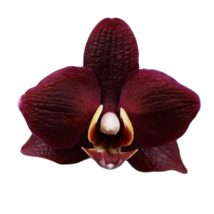
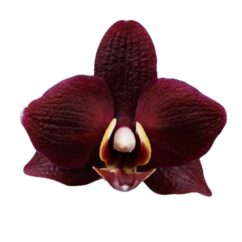

Happy Birthday!
Here’s to another year of laughter, memories, and little moments that mean everything.
scroll down for more
Here’s to another year of laughter, memories, and little moments that mean everything.
scroll down for more


 
